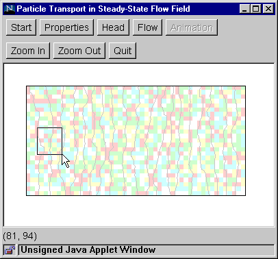
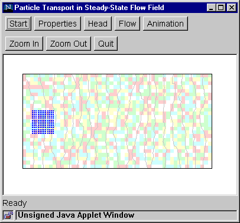

Step 4b: Flow (Particle Transport)
This step sets up the initial position of a cluster of fluid particles.
- Click the "Flow" button to bring up the Flow
Dialog Box.
- Select the "Particle movement" option.
- Enter the initial particle spacing (in meters).
As a general guide, start with a spacing that about 1/100 of the model
domain length. (For example, if the model domain length is 1000 meters,
then enter a particle spacing of 10 meters.)
- Click "OK" to close the dialog box.
- Draw a polygon to outline the initial location
of a cluster of fluid particles. Keep the polygon relatively small to
avoid having too many particles (which will slow down the animation).
- After the polygon is drawn, it will be filled
with particles at the prescribed spacing.
To change the particle spacing, repeat the
above step.


Go to Step 5b
Back to Step 3
Switch to Step 4a (Flow paths)
Return to Introduction
|